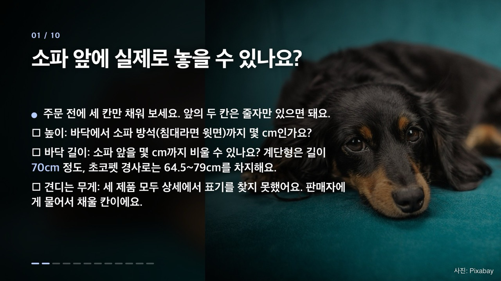

이 게시물은 쿠팡 파트너스 활동의 일환으로, 이에 따른 일정액의 수수료를 제공받습니다.
강아지계단 높이, 소파 35cm면 2단·3단, 침대 45cm 넘으면 경사로 48cm
강아지계단은 꼭대기 높이가 소파·침대 윗면에 닿아야 제 역할을 합니다. 소파 윗면이 35cm 안팎이면 2단 퐁플라(35cm)·3단 슈퍼펫(36cm)·초코펫 경사로 일반형(38cm)이 모두 맞고, 침대처럼 45cm를 넘으면 셋 중 남는 건 초코펫 프리미엄형(48cm)뿐이에요. 줄자로 한 번 재고 사면, 계단 끝에서 다시 뛰어오르는 아이를 보게 되는 일을 피할 수 있어요.

우리 집 높이엔 어느 제품?
바닥에서 소파 방석(또는 침대 매트리스) 윗면까지 잰 높이로 보세요. 높이는 각 제품 상세 이미지 표기예요.
| 제품 | 형태 | 전체 크기(폭×길이×높이) | 11월 6일 가격 |
|---|---|---|---|
| 레드퍼피 퐁플라 버블 투텝 | 2단 계단 | 40×70×35cm | 27,800원 |
| 슈퍼펫 커브 스텝 | 3단 계단 | 40×70×36cm | 28,400원(쿠폰 적용) |
| 초코펫하우스 논슬립 스텝 일반형 | 경사로 | 40×64.5×38cm | 51,500원 |
| 같은 제품 와이드형 | 경사로 | 60×64.5×36.5cm | 링크 옵션 아님 |
| 같은 제품 프리미엄형 | 경사로 | 45×79×48cm | 링크 옵션 아님 |
슈퍼펫 상세 도면에는 4단 48cm도 있어요(판매 옵션은 아래 참고). 바닥 길이도 같이 챙기세요. 계단형은 70cm, 초코펫 경사로는 64.5~79cm를 소파 앞에서 차지합니다.
소파 35cm 안팎, 2단 계단이면 레드퍼피 퐁플라 버블 투텝 — 가격·구매처 보기

한 칸은 몇 cm쯤 오르나요?
단 높이 숫자는 세 제품 모두 따로 적혀 있지 않아요. 전체 높이를 단 수로 나눠 보면 대략 이래요.
- 퐁플라 2단: 35÷2, 한 칸 평균 약 17.5cm.
- 슈퍼펫 3단: 36÷3, 한 칸 평균 12cm.
같은 소파 높이를 오르는데 3단은 한 칸이 5cm 남짓 낮아지는 셈이에요. 한 칸 높이를 낮추고 싶다면 칸 수가 많은 쪽, 칸이 아예 없길 원하면 경사로를 비교하면 됩니다. 초코펫은 전 사이즈 경사각 24.5°의 슬라이드형이고, 슈퍼펫은 '꺾임 없는 완만한 곡선' 모양이라고 적었어요.
초코펫 상세에는 '층계형 스텝은 넘어질 수 있고 관절에 무리를 줄 수 있다'는 문구가 있지만, 시험 자료가 붙지 않은, 소형견 위주로 쓴 판매자 설명이에요. 건강 판단은 이 문구보다 수의사 안내를 따르세요.
계단보다 완만한 비탈, 초코펫하우스 논슬립 스텝 — 가격·구매처 보기

미끄러지거나 밀리진 않을까요?
미끄럼을 막는다고 적은 자리가 제품마다 달라요.
- 퐁플라: 밀림방지 바닥, 압축 스펀지로 무게감, 하네스에 거는 연결고리.
- 슈퍼펫: 발 닿는 윗면·가구 닿는 면·바닥면 세 군데 논슬립.
- 초코펫: 윗면 실리콘 원단.
칸 많은 곡선 3단, 슈퍼펫 커브 스텝 — 가격·구매처 보기
오줌 실수한 날은 어떻게 씻어요?
- 퐁플라: 커버 분리, 손세탁.
- 슈퍼펫: 커버를 30℃ 이하 단독 손세탁 권장, 안쪽 스펀지는 세탁 불가. 압축 포장이라 받은 뒤 1~2일 지나야 모양이 돌아온대요.
- 초코펫: 윗면·옆면 방수 원단이라 물티슈로 닦는 방식(세탁 표기 없음).

확인하지 못한 것: 세 제품의 견디는 무게, 슈퍼펫 4단 판매 옵션. 체격이 큰 아이라면 상품 문의에 체중을 적어 확인하세요. 직접 써 본 글은 아니고, 가격은 11월 6일 쿠팡 화면 기준(슈퍼펫 쿠폰 전 29,900원)이라 지금은 다를 수 있어요.
고양이 침대 계단은 따로 정리했어요: https://blog.naver.com/darri06/224467171435
출처
- 크기·형태·미끄럼 방지·세탁: 11월 6일 쿠팡 판매 페이지와 상세 이미지 글자